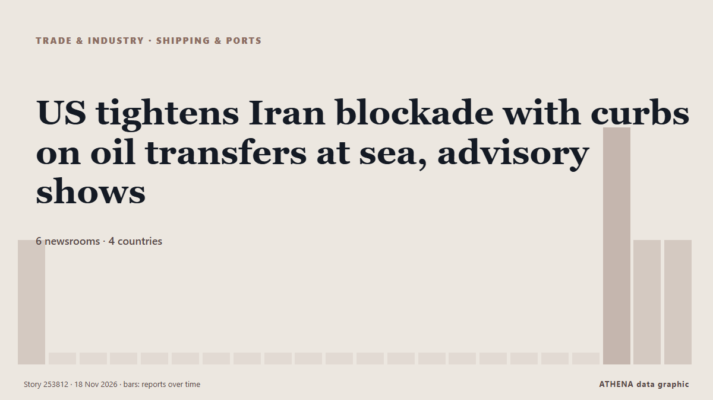

Shipping & ports
SponsoredPresented by  Cybernetics and Artificial Intelligence Lab Welcome to the Cybernetics and Artificial Intelligence Laboratory, established at the Department of Business Administration of the National and Kapodistrian University of Athens. The lab is headed by Professor Dimitrios Thomakos. The lab aims to do research that can be published in top venues. Our research uses tools and methods of Artificial Intelligence, and lies in the following areas: - Forecasting - Decision making - Cyber security - Finance We are always looking forward to collaborating with exceptional students!
Cybernetics and Artificial Intelligence Lab Welcome to the Cybernetics and Artificial Intelligence Laboratory, established at the Department of Business Administration of the National and Kapodistrian University of Athens. The lab is headed by Professor Dimitrios Thomakos. The lab aims to do research that can be published in top venues. Our research uses tools and methods of Artificial Intelligence, and lies in the following areas: - Forecasting - Decision making - Cyber security - Finance We are always looking forward to collaborating with exceptional students!
| 6 Nov | 0 |
|---|---|
| 7 Nov | 0 |
| 8 Nov | 0 |
| 9 Nov | 0 |
| 10 Nov | 0 |
| 11 Nov | 0 |
| 12 Nov | 5 |
| 13 Nov | 0 |
| 14 Nov | 5 |
| 15 Nov | 0 |
| 16 Nov | 7 |
| 17 Nov | 2 |
| 18 Nov | 4 |
| 19 Nov | 0 |

US tightens Iran blockade with curbs on oil transfers at sea, advisory shows
London: The US military will treat ships that receive cargo at sea from vessels loaded in Iran as attempting to evade its blockade of Iranian ports and could take action against them, according to an… from Deccan Herald
At APC Presidential Rally In Birnin Kebbi, Tinubu Approves Inland Dry Port For Kebbi
• Says it’s strategic towards boosting the state’s economy •Pledges improved security and completion of landmark projects •Former govs Aliero, Bagudu and Dankingari back his re-election Deji Elumoye… from ThisDay (Nigeria)
Yemen ambassador to Kuwait warns of wider regional security risks
KUWAIT CITY, Nov 17: Ambassador of Yemen to Kuwait Dr. from Arab Times
Industry calls for regulatory stability ahead of MEPC
Nine key industry bodies have called for governments to agree a way forward at the upcoming IMO Marine Environment Protection Committee (MEPC) meeting. from Seatrade Maritime
Interview: Hong Kong has key role in keeping global shipping stable, pushing green shift: ICS chairman
The third Hong Kong Global Maritime Trade Summit brought together senior government representatives and maritime industry leaders to discuss the. from Cyprus Shipping News
Egypt Rejects Turkey-Libya Maritime Memorandum at UN
Egypt also disputed maritime boundaries declared unilaterally by Libya and rejected energy cooperation agreements signed by Turkey and Libya. from To Vima (English)
TechnipFMC Keeps DOF's Skandi Africa Subsea Vessel on Contract
DOF Group has secured a new contract from TechnipFMC for its subsea construction vessel Skandi AfricaThe new agreement, valued between $100 million to $200 million… from Offshore Engineer
Oil Tanker Transiting Strait Of Hormuz Attacked Near Oman, 4th In 24 Hours
The Iran Navy said the tanker was travelling in a restricted area with its navigation switched off. from NDTV
Iran's army Navy says fourth tanker hit by mine east of Strait of Hormuz
Iran's Navy said on Monday that a fourth oil tanker, within the past 24 hours, had caught fire after striking a naval mine in what it described as a restricted area east of the Strait of Hormuz… from Deccan Herald
Port of Gothenburg eyes large-scale biogas bunkering in 2027
Sweden’s Port of Gothenburg is gearing up to launch a new LBG liquefaction plant next year to enable large-scale liquefied biogas bunkering. from Offshore Energy
Iran says 2 oil tankers hit mines, catch fire in Strait of Hormuz
IRGC Navy says it mined US-created southern route through strait. from Anadolu Agency (English)
Iran FM says neighbouring Asian states back two-day Hormuz plan
Tehran has said it is ready to reopen the strait within two days if the US agrees to its conditions. from The Straits Times
2 violating oil tankers explode in south Hormuz Strait: IRGC
TEHRAN, Nov. 15 (MNA) – The Public Relations Office of the IRGC Navy Force has announced that two oil tankers caught fire and exploded in southern Strait of Hormuz. from Mehr News (English)
Yemeni forces' retreat leaves Houthis in control of key Red Sea waterway
Saudi-backed forces say they are moving troops from the Bab al-Mandab Strait to protect the interim capital, Aden. from BBC News
Trump Extends Jones Act Waiver as Oil Transport Pressures Persist
President Donald Trump extended for 90 days a waiver of a shipping law to allow foreign-flagged ships to transport oil and other commodities between US ports, a White House official said on Friday… from Offshore Engineer
Black Sea ship attacks ‘another front’ of Russia's war: EU
With Black Sea drone attacks disrupting trade for the world’s biggest wheat exporter, Russian farmers are… from BusinessWorld
Tanker steering problem caused New Orleans ship collision
The asphalt tanker vessel that struck a docked cruise boat in the Mississippi River at New Orleans last week experienced a steering problem in which its rudder was stuck in one position, US… from RTÉ News
ATI Secures Manila South Harbour Concession Renewal To 2063
Renewal provides long-term certainty for ATI to advance investment in port modernisation, innovation and sustainable infrastructure MANILA, PHILIPPINES – Media OutReach Newswire – 12 November 2026… from Laotian Times
Dubai ranks 12th among world’s leading maritime cities as Abu Dhabi climbs to 15th
Dubai ranks 12th globally and Abu Dhabi rises to 15th in the 2026 Leading Maritime Cities report, with Dubai also fifth worldwide for maritime resilience. from Arabian Business